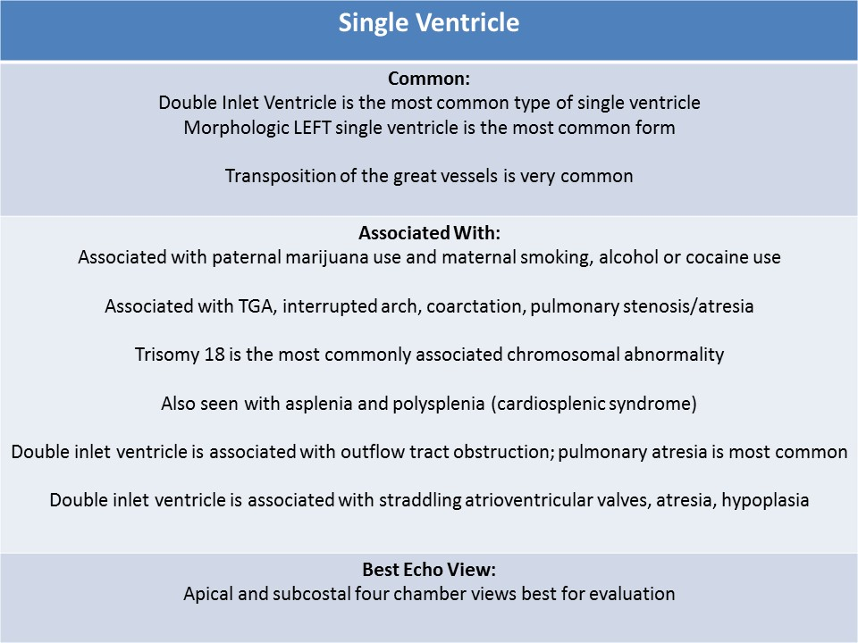

.jpg)
Single Ventricle
General Information:
- Three chambered heart, 2 atria with either 1 or two atrioventricular valves
- Pulmonary and systemic circulation are a parallel circuit with univentricular heart
- Pulmonary and systemic circulation are separate in the normal patient = series circuit
- Synonyms: univentricle, primitive ventricle, common ventricle, double inlet ventricle
- Associated with paternal marijuana use and maternal smoking, alcohol or cocaine use
- Caused by abnormalities in development of the bulboventricular loop
- One valve may be atretic (mitral or tricuspid atresia)
- Transposition of the great vessels is very common
- Also associated with interrupted arch, coarctation, pulmonary stenosis/atresia
- Trisomy 18 is the most commonly associated chromosomal abnormality
- Also seen with asplenia and polysplenia (cardiosplenic syndrome)
- Apical and subcostal four chamber views best for evaluation
- Hallermann and Van Praagh classification: one or two atrioventricular valves connect into a single ventricle
- Anderson classification: a single ventricle with/without a rudimentary ventricle (outlet chamber)

Double Inlet Ventricle:- Most common type of single ventricle
- Normal right and left atria empty into a common ventricle
- Separate right and left atrioventricular valves
- Morphologic LEFT single ventricle is most common form
- May see a small rudimentary second ventricle
- Rudimentary outlet chamber (bulboventricular foramen) presents with VSD
- D or L-malposition of the aorta and pulmonary artery, one or both great arteries arise from the outlet chamber
- Best evaluated using the four chamber view
- Four chamber view: abnormal, missing ventricular septum
- Outflow tract obstruction can be present; pulmonary atresia is most common
- Associated with straddling atrioventricular valves, atresia, hypoplasia
Neonatal echo- four chamber view with double inlet left ventricle ( morphological left ventricle=smooth wall) with the presence of right and left atria draining through two atrioventricular valves
Neonatal echo- four chamber view with color Doppler